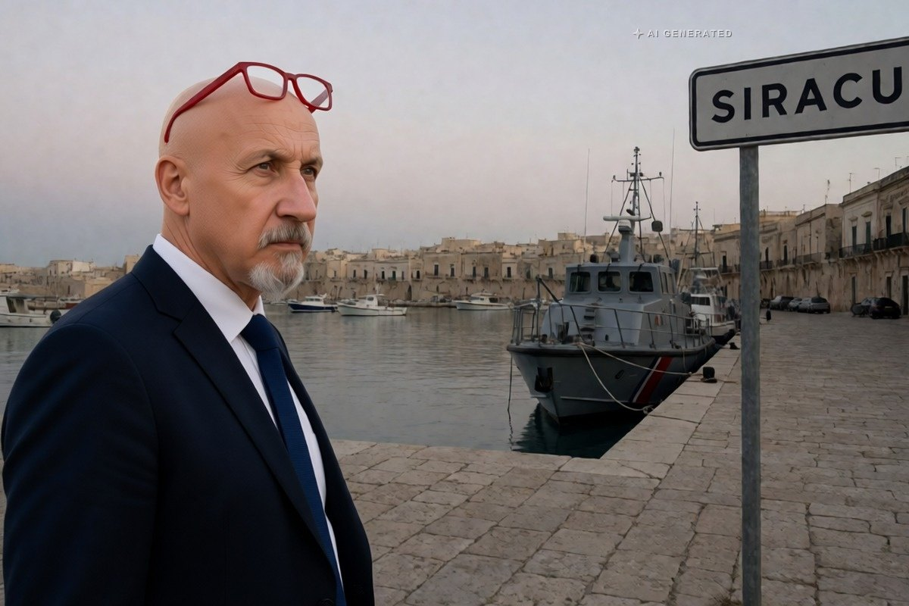

Cronaca · 7 novembre 2026
Siracusa, diciassette anni per l'omicidio dell'ufficiale Pellizzeri

Il gup ha condannato Francesco Mirabella a una pena più alta di quella chiesta dall'accusa, e con il rito abbreviato. Al centro della lite, secondo i pubblici ministeri, gli arretrati di un affitto.
di Franco Zanghì
Il giudice dell'udienza preliminare del tribunale di Siracusa ha condannato a 17 anni di reclusione Francesco Mirabella, 32 anni, per l'omicidio di Giuseppe Pellizzeri, ufficiale della Marina militare di 37 anni. La notizia della sentenza è del 5 novembre.
La lite in strada
Il fatto risale al 10 giugno 2025, a Siracusa. Secondo l'accusa, all'origine c'era una controversia per il mancato pagamento dell'affitto di un immobile e la richiesta di saldare gli arretrati. La discussione in strada è degenerata e Mirabella ha sparato con una pistola, colpendo Pellizzeri alla spalla e allo sterno. L'ufficiale è morto per quelle ferite. Alcune ore dopo Mirabella si è presentato spontaneamente ai carabinieri.
Una pena più alta della richiesta
Perché il giudice ha potuto superare la richiesta
Il rito abbreviato è un procedimento che si svolge davanti al giudice dell'udienza preliminare, senza il dibattimento, sulla base degli atti raccolti dalle indagini. In cambio l'imputato ottiene una riduzione di un terzo della pena. È una scelta che conviene quando il quadro probatorio è solido e si punta a contenere la condanna.
La richiesta del pubblico ministero, però, non vincola il giudice: il pubblico ministero propone, il giudice decide, e può restare sotto come può andare sopra. Qui è andato sopra di quattro mesi, pur applicando lo sconto del rito. È un segnale su come ha valutato la gravità del fatto, e le motivazioni, quando saranno depositate, diranno perché.
Il processo si è svolto con il rito abbreviato, che comporta una riduzione di un terzo della pena. Il pubblico ministero aveva chiesto 16 anni e 8 mesi: il giudice è andato oltre la richiesta dell'accusa, e lo ha fatto pur applicando lo sconto previsto dal rito.
È una sentenza di primo grado: fino a quella definitiva, per Mirabella vale la presunzione d'innocenza.
Le parti potranno impugnare la decisione in appello, e dopo l'appello resta la Cassazione. Nel frattempo nulla è stabilito in via definitiva.
Il punto
Qui non ci sono misteri da risolvere. C'è un uomo di 37 anni che non c'è più e una lite per i soldi di un affitto: una lite come tante, nelle nostre città, finita questa volta nel modo peggiore. Dietro una sentenza così restano due famiglie segnate per sempre.
Fonti
- Ansa, «Uccise ufficiale di Marina a Siracusa, condannato dal gup a 17 anni», 5 novembre 2026
- LiveSicilia, «Omicidio Giuseppe Pellizzeri a Siracusa, 17 anni a Mirabella», 5 novembre 2026
- Siracusa News, «Siracusa, omicidio Pellizzeri: 17 anni a Mirabella», 5 novembre 2026
- ilSicilia, «Siracusa, sparò a un ufficiale della Marina: condannato a 17 anni», 5 novembre 2026
Il testo di partenza indicava la vittima come ufficiale della Guardia costiera: il ricontrollo del 7 novembre sull'Ansa e sulle testate siciliane dice che Giuseppe Pellizzeri era ufficiale della Marina militare, e la pagina riporta questa versione. Le motivazioni della sentenza non sono ancora depositate.